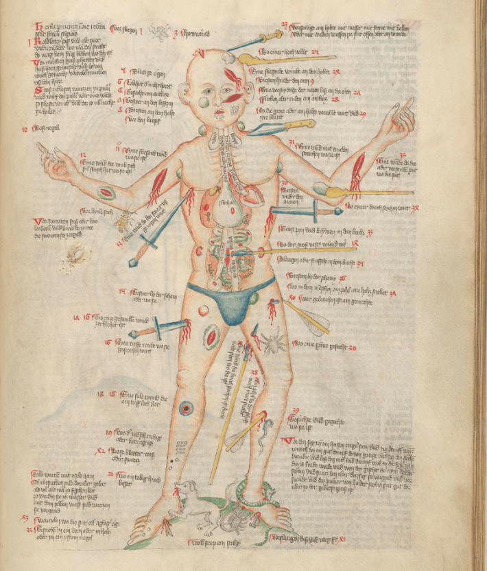

The Wound Man is an image at once troubling and enigmatic. A male figure looks out from the parchment page bearing a multitude of graphic wounds. His skin is covered in bleeding cuts and lesions, stabbed and sliced by elaborately detailed knives, spears, and swords of varying sizes, many of which remain stuck threateningly in the body. His head and thighs are pierced with arrows, some intact, some snapped down to just their heads or shafts, their fletching feathering his form. A club metes out blunt trauma at the shoulder, while inside his chest—rendered eerily transparent so as to reveal the structure of his intestines, lungs, spleen—the tip of a dagger punctures his heart.
The figure also bears traces of more quotidian accident. His shins and feet are clustered with thorn scratches and trod-upon blades. He is peppered with itchy insect bites. And to compound his appalling, cumulative misfortune, the Wound Man is also deeply unwell. His armpits and groin sport rounded, dark red buboes. A label tells us he is beset by “pruritus per totum corpus” (itching all over the body), which alongside the depicted rashes and swellings suggests the contraction of multiple diseases. The violence and illness rendered unto his body is total and all-consuming.
Yet, despite such a horrendous barrage, the figure’s expression is unnervingly resolute. He stands with eyes wide open, very much still alive, and in this simple act the image’s purpose crystallizes. For despite its gratuitous display, the Wound Man was not a figure originally designed to inspire fear or to menace. Instead, it represented something altogether more hopeful: an imaginative and arresting reminder of the powerful knowledge that could be channeled and dispensed through the practice of premodern medicine.
Today the image leads a spectacular life. Recently, his broken body has provided a grotesque lure to a diverse and somewhat bizarre variety of modern constituents. In 1995, the figure was included as part of the new official coat of arms of the United Kingdom’s Royal College of Emergency Medicine, reworked with rippling abs and Ken-doll hair to conveniently present in a single body the many trauma injuries that the college’s members were equipped to tackle. For the administrators of Mont Orgeuil Castle, a 13th-century fortress overlooking the port of Gorey on the island of Jersey, the Wound Man was a more playful thing, a fitting inspiration for a sculpture by the artist Owen Cunningham, who produced a giant three-dimensional likeness of the figure for the gleeful, gross-out delight of visitors.

WOUNDED MEN: Another version of the Wound Man, this one having encountered an unfriendly dog and an arrow to the calf. Credit: Wellcome Collection, London, Public Domain.
This same gruesome sensibility, revived and mercilessly amplified, ushered the image onto TV screens, gracing the desk of Mads Mikkelsen’s eponymous cannibalistic doctor Hannibal Lecter in the 2013 NBC series Hannibal, a show in turn based on Thomas Harris’s 1981 novel Red Dragon. Harris drew on the Wound Man as a model for several of his book’s particularly spectacular murders, but he was not the first writer to cite the figure as their muse. Back in 1957, no less a literary luminary than Ian Fleming had written to his publisher to suggest that instead of its current title, Dr. No, perhaps the sixth book in his James Bond series of spy thrillers should be renamed The Wound Man, after a historical picture he had recently come across in a pamphlet and for which he claimed to have great affection. The publisher declined.
In the last decade or so, the image has inspired music from a heavy metal band, a book of Scots poetry, a piece of one-man storytelling theater entitled The Adventures of Wound Man and Shirley, an anarchist tea-towel protesting corporate profiteering, and a diagram in a respected veterinary journal outlining commonly sustained wounds among dueling cats.
But the Wound Man is far more than spectacle. From the very moment of its inception, the Wound Man was an image intimately tied to actual practice. He was in fact many, many things at once: epistemic diagram, medical tool, affective muse, technical spur, international artwork. The Wound Man can be seen as one of the most unusual outcomes in a long line of surgical literary reformulations, for we find the figure closely allied with a specific group of surgical books whose structure and contents aimed to take large swaths of well-established medical knowledge and rework it in innovative ways.
On the one hand, the Wound Man boldly gathered together in a single space an encyclopedic host of contemporary techniques for cutting, suturing, bandaging, administering, setting, and letting. But it also paired these instructions with a canny ability to draw on parallel innovations in visual diagnosis and diagrammatic aesthetics. The image of the Wound Man’s large body would have caught the reader’s eye far more effectively than a mere contents list, assuring them quickly that a particular cure could be found within. Likewise, the ordered mapping of disease about his physical form could serve a mnemonic function for readers keen to memorize the contents of his body and thus the contents of the treatise.
Textual remedies following the image would include a brief set of practical procedures for treating the problem, for instance, directions on how to clean and stitch a wound or for making up compound medicines for application or ingestion. Entries are typically rounded out by a brief comment on aftercare, either recommending that the patient be monitored for specific signs or that certain prescriptions be repeated at particular times. Many also close with the casual assurance that a certain salve is particularly effective, that a rash will soon abate, or that a patient will no doubt return to good health.
Still, it is hard to know exactly how these Wound Men images were received or for whom they were specifically intended. Few iterations have reached us with clear enough internal evidence or collecting provenance to link them to particular medieval individuals with much certainty. We might sensibly assume that their visual diversity and handsome lines point to patrons who could afford the expense of a relatively accomplished artist. The regular incorporation of other forms of parallel calendrical and medical materials—bloodletting figures, urine tables, Zodiac Men—indicates that the books in which these images were contained were also geared toward medical professionals, or at least toward nonspecialists invested in the impressive learning represented by the healing arts.
To track the Wound Man’s history is to explore a developing cast of characters who interacted with the image from different vantage points across its busy chronological and geographical sweep. Engaged by healers and patients alike, but also by printmakers and poets, scribes and students, nuns and monks, and modern writers and artists today, the Wound Man and his wounds have enjoyed a surprisingly robust and vital longevity. 
Adapted from Wound Man: The Many Lives of a Medical Image, Copyright (c) 2025 by Jack Hartnell. Used with permission of the publisher, Princeton University Press. All rights reserved.
Lead image: Wellcome Collection, London, Public Domain